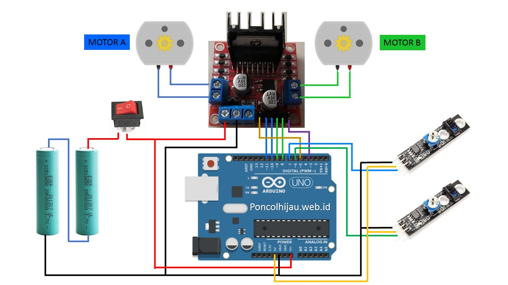

Line-Following Robot Project
Using Arduino, IR Sensors & Motor Control
What is a Line-Following Robot?
A Line-Following Robot is an autonomous bot that follows a predefined path using sensors. It is widely used in industrial automation, military surveillance, and self-driving technology.
🔧 How It Works:
- **IR Sensors** detect black/white contrast to follow a path.
- **Arduino** processes sensor data and controls motor speed.
- **Motor Driver (L298N)** adjusts movement based on sensor feedback.
- **If the bot veers off the track**, it corrects its direction automatically.
Components Used
- Arduino Uno
- IR Sensors
- DC Motors & Motor Driver (L298N)
- 9V Battery
Circuit Diagram
Arduino Code
#define LEFT_SENSOR A0
#define RIGHT_SENSOR A1
#define LEFT_MOTOR 5
#define RIGHT_MOTOR 6
#define LEFT_SENSOR A0
#define RIGHT_SENSOR A1
#define LEFT_MOTOR 5
#define RIGHT_MOTOR 6
#define LEFT_SENSOR A0
#define RIGHT_SENSOR A1
#define LEFT_MOTOR 5
#define RIGHT_MOTOR 6
void setup() {
pinMode(LEFT_SENSOR, INPUT);
pinMode(RIGHT_SENSOR, INPUT);
pinMode(LEFT_MOTOR_FORWARD, OUTPUT);
pinMode(LEFT_MOTOR_BACKWARD, OUTPUT);
pinMode(RIGHT_MOTOR_FORWARD, OUTPUT);
pinMode(RIGHT_MOTOR_BACKWARD, OUTPUT);
Serial.begin(9600);
}
void loop() {
int leftSensor = digitalRead(LEFT_SENSOR);
int rightSensor = digitalRead(RIGHT_SENSOR);
Serial.print("Left Sensor: ");
Serial.print(leftSensor);
Serial.print(" | Right Sensor: ");
Serial.println(rightSensor);
// Case 1: Both sensors on the line → Move Forward
if (leftSensor == 0 && rightSensor == 0) {
moveForward();
}
// Case 2: Left sensor off the line → Turn Right
else if (leftSensor == 1 && rightSensor == 0) {
turnRight();
}
// Case 3: Right sensor off the line → Turn Left
else if (leftSensor == 0 && rightSensor == 1) {
turnLeft();
}
// Case 4: Both sensors off the line → Stop (or can implement a recovery mechanism)
else {
stopMotors();
}
}
// Function to move forward
void moveForward() {
digitalWrite(LEFT_MOTOR_FORWARD, HIGH);
digitalWrite(LEFT_MOTOR_BACKWARD, LOW);
digitalWrite(RIGHT_MOTOR_FORWARD, HIGH);
digitalWrite(RIGHT_MOTOR_BACKWARD, LOW);
}
// Function to turn right
void turnRight() {
digitalWrite(LEFT_MOTOR_FORWARD, HIGH);
digitalWrite(LEFT_MOTOR_BACKWARD, LOW);
digitalWrite(RIGHT_MOTOR_FORWARD, LOW);
digitalWrite(RIGHT_MOTOR_BACKWARD, LOW);
}
// Function to turn left
void turnLeft() {
digitalWrite(LEFT_MOTOR_FORWARD, LOW);
digitalWrite(LEFT_MOTOR_BACKWARD, LOW);
digitalWrite(RIGHT_MOTOR_FORWARD, HIGH);
digitalWrite(RIGHT_MOTOR_BACKWARD, LOW);
}
// Function to stop
void stopMotors() {
digitalWrite(LEFT_MOTOR_FORWARD, LOW);
digitalWrite(LEFT_MOTOR_BACKWARD, LOW);
digitalWrite(RIGHT_MOTOR_FORWARD, LOW);
digitalWrite(RIGHT_MOTOR_BACKWARD, LOW);
}
Project Demo
Real-World Applications
- Autonomous Military Vehicles
- Surveillance Robots
- Rescue Missions